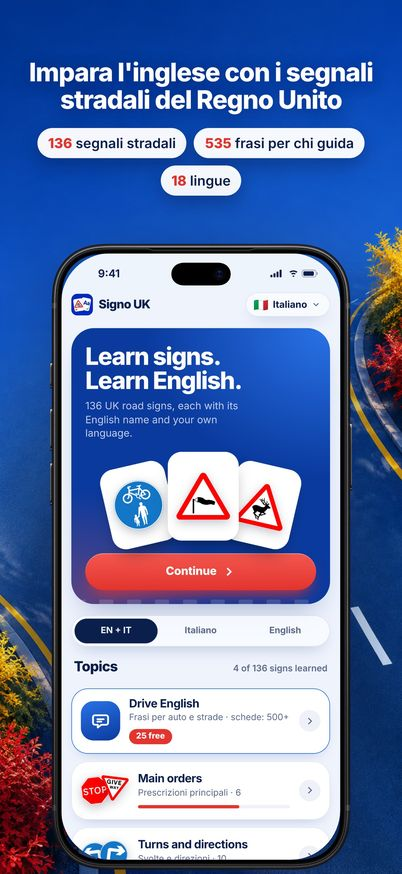
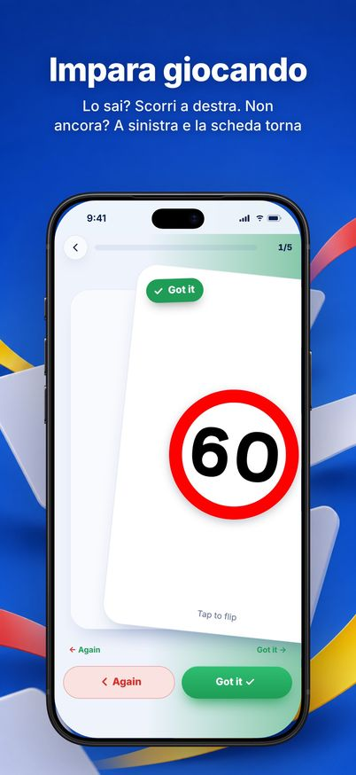
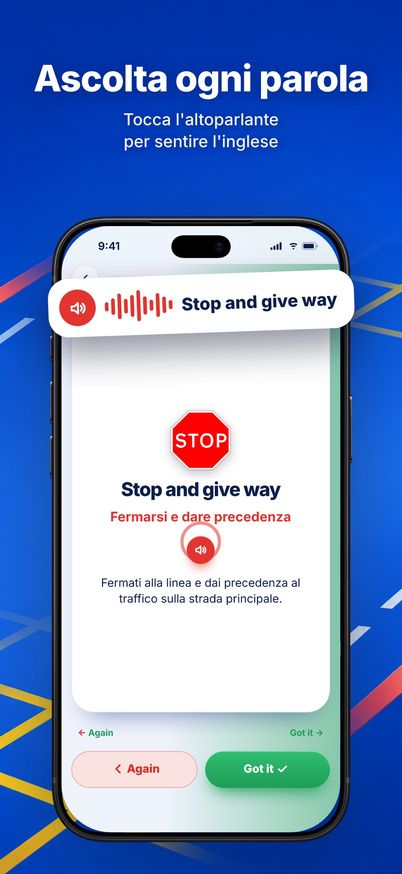
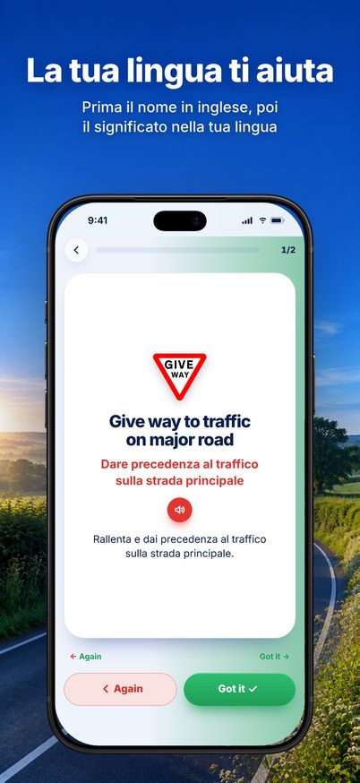
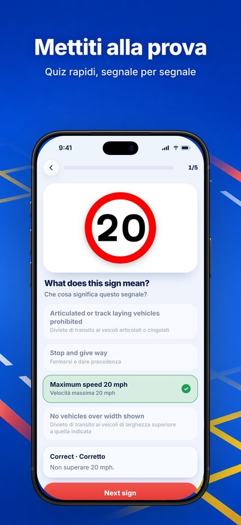
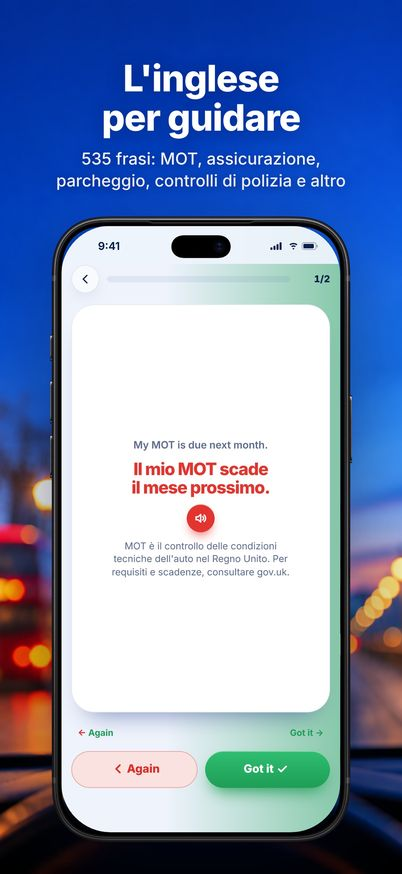
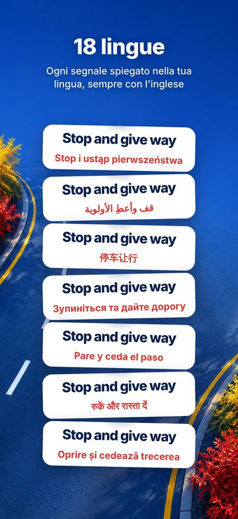
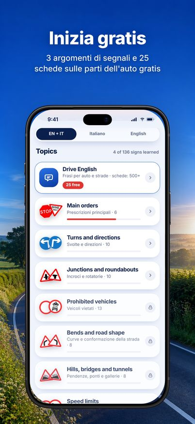
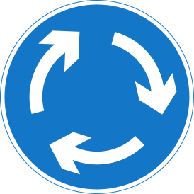
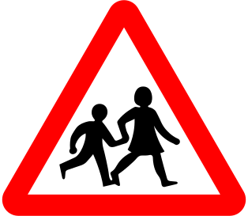

Segnali stradali del Regno Unito, spiegati in italiano
Cosa significa ogni segnale e come si chiama in inglese. Signo è un'app per iPhone con 136 segnali e 535 frasi per guidare nel Regno Unito, spiegati in italiano.
Scarica su App StoreGratis: 3 argomenti di segnali e 25 parole sulle parti dell'auto. Signo Pro sblocca tutto.


Impara come in un gioco
Conosci il segnale? Scorri a destra; se no, a sinistra e tornerà. Ascolta ogni nome inglese con voce britannica e fai un breve quiz.








Segnali comuni e il loro significato
Tocca un segnale per leggere la spiegazione.
- Fermarsi e dare precedenzaStop and give way
 Dare precedenza al traffico sulla strada principaleGive way to traffic on major road
Dare precedenza al traffico sulla strada principaleGive way to traffic on major road Divieto di accesso ai veicoliNo entry for vehicular traffic
Divieto di accesso ai veicoliNo entry for vehicular traffic Si applica il limite di velocità nazionaleNational speed limit applies
Si applica il limite di velocità nazionaleNational speed limit applies- Velocità massima 30 mphMaximum speed 30 mph
 Velocità massima 20 mphMaximum speed 20 mph
Velocità massima 20 mphMaximum speed 20 mph Velocità massima 40 mphMaximum speed 40 mph
Velocità massima 40 mphMaximum speed 40 mph Velocità massima 50 mphMaximum speed 50 mph
Velocità massima 50 mphMaximum speed 50 mph Velocità massima 60 mphMaximum speed 60 mph
Velocità massima 60 mphMaximum speed 60 mph Ingresso in zona a 20 mphEntry to 20 mph zone
Ingresso in zona a 20 mphEntry to 20 mph zone Divieto di sorpassoNo overtaking
Divieto di sorpassoNo overtaking Divieto di svolta a destraNo right turn
Divieto di svolta a destraNo right turn Divieto di svolta a sinistraNo left turn
Divieto di svolta a sinistraNo left turn Divieto di inversione di marciaNo U-turns
Divieto di inversione di marciaNo U-turns Tenere la sinistraKeep left
Tenere la sinistraKeep left
MinirotatoriaMini-roundabout- Rotatoria più avantiRoundabout ahead
 Divieto di transito a tutti i veicoliAll vehicles prohibited
Divieto di transito a tutti i veicoliAll vehicles prohibited Divieto di transito ai veicoli a motoreNo motor vehicles
Divieto di transito ai veicoli a motoreNo motor vehicles Divieto di fermata sulla carreggiata principaleNo stopping on main carriageway
Divieto di fermata sulla carreggiata principaleNo stopping on main carriageway Percorso riservato ad autobus, biciclette e taxiRoute for use by buses, pedal cycles and taxis only
Percorso riservato ad autobus, biciclette e taxiRoute for use by buses, pedal cycles and taxis only Ingresso in zona di sosta controllataEntrance to controlled parking zone
Ingresso in zona di sosta controllataEntrance to controlled parking zone Solo titolari di permessoPermit holders only
Solo titolari di permessoPermit holders only Solo titolari di contrassegno per disabiliDisabled badge holders only
Solo titolari di contrassegno per disabiliDisabled badge holders only ParcheggioParking place
ParcheggioParking place AutoveloxSpeed cameras
AutoveloxSpeed cameras Stop - PoliziaStop - Police
Stop - PoliziaStop - Police Punto in cui iniziano ad applicarsi le norme autostradaliPoint at which motorway regulations start to apply
Punto in cui iniziano ad applicarsi le norme autostradaliPoint at which motorway regulations start to apply Semafori più avantiTraffic signals ahead
Semafori più avantiTraffic signals ahead Attraversamento pedonale a strisceZebra crossing
Attraversamento pedonale a strisceZebra crossing
Bambini diretti a scuola o al parco giochi, o provenienti da questi luoghi, più avantiChildren going to or from school or playground ahead Lavori stradaliRoad works
Lavori stradaliRoad works Strada sdrucciolevoleSlippery road
Strada sdrucciolevoleSlippery road Passaggio a livello con cancello o barriera più avantiLevel crossing with gate or barrier ahead
Passaggio a livello con cancello o barriera più avantiLevel crossing with gate or barrier ahead Passaggio a livello ferroviario senza cancello o barriera più avantiRailway level crossing without gate or barrier ahead
Passaggio a livello ferroviario senza cancello o barriera più avantiRailway level crossing without gate or barrier ahead Dare precedenza ai veicoli provenienti dalla direzione oppostaGive priority to vehicles from opposite direction
Dare precedenza ai veicoli provenienti dalla direzione oppostaGive priority to vehicles from opposite direction Precedenza rispetto ai veicoli provenienti dalla direzione oppostaTraffic has priority over oncoming vehicles
Precedenza rispetto ai veicoli provenienti dalla direzione oppostaTraffic has priority over oncoming vehicles Divieto di transito ai veicoli di altezza superiore a quella indicataNo vehicles over height shown
Divieto di transito ai veicoli di altezza superiore a quella indicataNo vehicles over height shown Incrocio a T più avantiT-junction ahead
Incrocio a T più avantiT-junction ahead Incrocio a quattro bracci più avantiCrossroads ahead
Incrocio a quattro bracci più avantiCrossroads ahead Strada a una sola corsiaSingle track road
Strada a una sola corsiaSingle track road Piazzola di scambioPassing place
Piazzola di scambioPassing place
Le parti dell'auto in inglese
25 parole dal capitolo gratuito Drive English. Tocca una parola per ascoltarla.
Tutti i 136 segnali sono nell'app
Gratis: 3 argomenti di segnali e 25 parole sulle parti dell'auto. Signo Pro sblocca tutto.